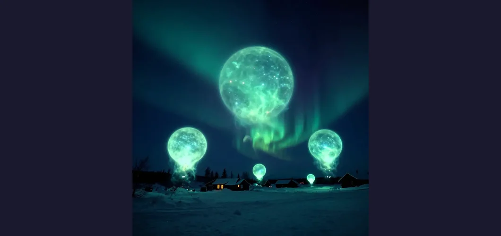

The Hessdalen Lights: Mysterious Glowing Orbs That Haunt a Norwegian Valley

Hessdalen is a lonely valley in central Norway, south-east of the city of Trondheim. On dark winter nights, something strange is said to happen there. Silent balls of light appear in the sky above the frozen farms and the pine forests. Nobody calls them. Nobody can say when they will come.
The lights can be bright white, warm yellow, or fiery red. Some flashes are blue or white. The lights float and zigzag. They join together and split apart. Then they vanish without a trace. Some last only a few seconds, and others stay for well over an hour.
Reports of strange lights in the valley go back to at least the 1930s. The busiest time was between December 1981 and the middle of 1984. In those years, people reported the lights 15 to 20 times a week. Only a few hundred people live in this small farming valley. It became a well-known place for people who study strange lights.
The Hessdalen Lights are different from most UFO sightings. They come back again and again. The lights appear more often in winter and in the evening hours. Some have been seen on radar and photographed by automatic cameras. Scientists from Norway, Italy, and other countries have studied them.
Scientists and volunteers have worked on the puzzle for more than four decades. Still, no single theory has explained what the lights are.
The valley is narrow and runs from north to south. The lights are seen along a stretch of about 12 kilometers. The valley belongs to the municipality of Holtålen in Trøndelag county. Few people live there, and mountains stand all around it.
The ground under the valley matters to this story. Some of the rock holds grains of a mineral called quartz. Many scientists think that the shape of the land, the weather, and the rock may play a part. These details became very important to the people who study the lights.
In December 1981, the people of the valley began to see bright lights in the sky, again and again. They could not explain them. They described glowing balls, usually white or yellow, but sometimes red. One study says the balls ranged from a few decimeters up to about 30 meters across.
Witnesses said the lights made no sound. Sometimes they hung in one place. Sometimes they drifted slowly across the valley. Some people said the lights shot away at great speed and then turned sharply.
Some witnesses said the lights seemed to notice them. They said the lights changed their path when someone came close. Nobody has proved this, and it may be only how the lights looked to them.
The number of sightings was remarkable. From late 1981 to the middle of 1984, people reported the lights 15 to 20 times a week. Tourists, reporters, and curious visitors came to the valley. The quiet valley turned into an outdoor observatory.
The wave was important for a second reason. It was steady. This was not a few witnesses who saw a vague shape on one night. The lights came back many times, and they were caught in photographs and on film.
So many sightings led to the first organized study. In 1983, a UFO researcher named Erling Strand started Project Hessdalen. Groups from Norway and Sweden joined in. The Norwegian military supported the project from 1983 to 1985.
The project brought instruments into the valley. There were cameras, radar, magnetometers, which measure magnetism, and infrared viewers. A report from the field study of 1984 listed 53 observations. It concluded that the lights could be measured.
The goal was simple. The team would watch the lights with care, collect facts they could measure, and try to learn what the lights were. Between 1983 and 1985, Project Hessdalen ran several field trips.
Some events were seen on radar and by eye at the same time. Others showed up in only one of the two. That is one reason why the lights are still argued about.
In 1998, a permanent station was set up in the valley. It is called the Hessdalen Automatic Measurement Station, or AMS. People call it the “Blue Box.” It is a shipping container with cameras and other sensors. Erling Strand and Bjørn Gitle Hauge guided the work.
The station can watch the sky all the time. Its records show that the lights appear more often in winter, and mostly in the hours between about 9 or 10 at night and 1 in the morning. The records can be studied with statistics.
In 2004, the Italian physicist Massimo Teodorani published a long study of the lights in the Journal of Scientific Exploration. The study was peer-reviewed. Peer-reviewed means that other experts check the work first. In 2007, Hauge wrote a report on the light itself.
Scientists use a spectroscope for this. It splits light into its separate colors, called wavelengths. Each chemical element leaves its own pattern of bright lines.
The results are not simple. One account says the analysis found hydrogen, oxygen, and titanium. Other writers say that scandium may play a part. Another account says that the tools were too weak to name the elements for sure.
If the light really comes from glowing gas, that would fit a plasma. A plasma is a gas in which the atoms have lost some of their electrons, and that makes it glow. Some researchers think dust from the valley may be part of it.
After more than four decades of work, the lights are still unexplained. But scientists have offered several ideas. One of the best known is the plasma idea. Teodorani, who has studied the lights in depth, supports it.
By this theory, the lights are a kind of natural plasma in the air. Each one is a glowing ball of charged gas. It would be similar to ball lightning, but not the same. One model says that dust and the gas radon make the plasma.
But the plasma idea has trouble with the way the lights behave. They hang in the air for a long time. Natural plasma, such as ball lightning, usually lasts only seconds. Until recently, none of the ideas explained everything that people saw.
A second main idea is about piezoelectricity. This is a hard word for a simple thing. Some minerals, above all quartz, make an electric charge when they are squeezed. By this idea, pressure in the rocks of the valley makes charges that light up the air above.
Critics have doubts about this idea. They say that the valley has little quartz. It is also not clear that the effect could make lights so large, so bright, and so lasting.
A third idea is sometimes called the “natural battery” theory. By this idea, the valley sides work like the two ends of a giant battery. The electric currents then charge the air above.
A fourth idea is combustion. By this idea, dust from the valley floor that holds scandium burns in the air. Some think this fits the colors of the light.
Skeptics give a simpler answer. Brian Dunning wrote that many of the station’s pictures look like the landing lights of aircraft. He points out that an air route runs straight up the valley. He also says that no lights have been reported from inside the valley.
Researchers have also tested other ideas, such as solar activity, cosmic rays, and the upper air. None has been proven. Some researchers say that they can rule out simple answers such as thunderstorms. The lights do not seem to be linked to them.
Today the Hessdalen Lights are still reported. But they come far less often than in the great years of 1981 to 1984. About 20 sightings a year are reported, and the project says the real number may be higher. Project Hessdalen is now more than 40 years old.
The project is now a non-profit group run by volunteers, a form of citizen science. It was registered as a non-profit in 2023. Its members pay for equipment with fees and gifts. The group holds monthly open meetings, and it streams camera pictures on the internet.
The Blue Box now has more tools, such as a passive radar, an infrasound sensor, and an alarm system that uses artificial intelligence. Infrasound is sound too low for people to hear. The group also plans to use fast drones that fly close to the lights.
The valley still gets visitors. Long northern nights in winter are the best time to look. Sightings are fewer than at the peak in the 1980s. But the quality of the data is better, thanks to digital cameras and computers.
The Hessdalen Lights are among the best-known unexplained lights in the world. Most UFO sightings are short and poorly observed. At Hessdalen, instruments have been recording for decades. Radar, cameras, and automatic stations have all watched the lights.
Do the lights come from something real and physical? Many of the researchers think so. The most popular idea is some kind of natural plasma, made by the special rocks and air of the valley. But skeptics think many lights are ordinary lights, such as aircraft. Nobody knows exactly how it works.
As instruments get better and the data grows, the answer may come one day. Or the lights may go on reminding us that nature still has secrets, even in the 21st century. Until then, they keep glowing in the Norwegian sky. What are they?
References & Further Reading
Project Hessdalen: Home — Blue Box, 1984 field study, volunteer group, camera streams
📚 Recommended Reading: UFOs: Generals, Pilots by Leslie Kean (on Amazon) — As an Amazon Associate, we earn from qualifying purchases.
Editorial note: Many people saw lights in the valley, and instruments have recorded some of them. Nobody knows what they are: some scientists think of a natural plasma, and skeptics think many are ordinary lights such as aircraft. See our Editorial Policy.